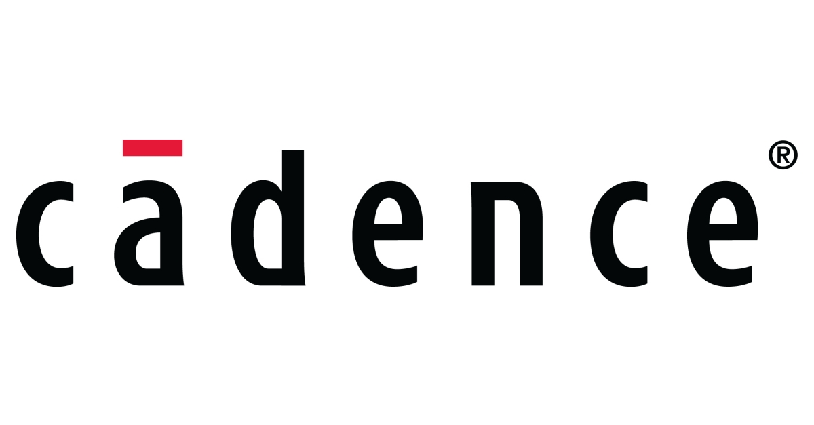

IN THE CLASSROOM:
The Cadence University Program provides Brown undergraduate and graduate students with the tools necessary to gain hands-on experience in both integrated circuit (IC) design and printed circuit board (PCB) design through the ENGN2980 Special projects/reading course. In this course, students not only learn the basics of these tools to create their own designs but also gain further experience by analyzing real designs created by the Nurmikko Neuroengineering Lab for various neuroengineering applications. By placing the course in this context, students start with a general engineering problem, experience the thought process behind designing a solution, and then implement or analyze pieces of this solution using the Cadence software.
The Cadence tools that students primarily use in ENGN2980 are the following:
The Cadence tools that students primarily use in ENGN2980 are the following:
- Virtuoso (Analog Design Environment, Schematic Editor)
- Cadence Chip Assembly Router
- Allegro (PCB Librarian, Design HDL)
IN RESEARCH:
Furthermore, graduate students in the Nurmikko Lab utilize the Cadence software to design custom ICs and PCBs for wireless neural recording and processing devices. More information on this research can be found here.
The Cadence tools that are primarily used in research are the following:
“Cadence is a registered trademark of Cadence Design Systems, Inc., 2655 Seely Avenue, San Jose, CA 95134.”
The Cadence tools that are primarily used in research are the following:
- Custom IC
- SiP
- Digital IC
- Verification
“Cadence is a registered trademark of Cadence Design Systems, Inc., 2655 Seely Avenue, San Jose, CA 95134.”